+
Produksi Energi (GWh/Tahun)
Energi Panas Bumi Terbarukan untuk Nusantara
PT Geo Dipa Energi (Persero) Unit Dieng mengelola potensi geothermal dataran tinggi Dieng secara berkelanjutan, handal, dan ramah lingkungan demi mendukung ketahanan energi nasional.
+
Kapasitas Terpasang (MW)
+
Tahun Pengalaman
%
Energi Bersih
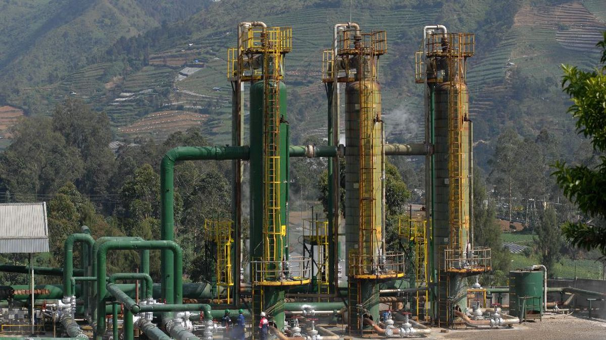
Sejarah Perusahaan
Perjalanan panjang pengelolaan dan pengembangan potensi panas bumi di Kawasan Dieng
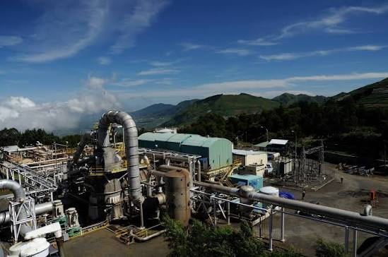
Pionir Pengembang Energi Panas Bumi Berkelanjutan di Indonesia
PT Geo Dipa Energi (Persero) didirikan untuk mengelola kawasan panas bumi Dieng dan Patuha demi mendukung ketahanan energi nasional berbasis energi bersih.
- 2002: Pembentukan PT Geo Dipa Energi sebagai patungan antara PT PLN (Persero) dan PT Pertamina (Persero) untuk mengelola WKP Dieng dan Patuha.
- 2011: Resmi menjadi BUMN (Badan Usaha Milik Negara) di bawah Kementerian Keuangan Republik Indonesia melalui pengalihan saham.
- Pengoperasian PLTP Dieng Unit 1: Sukses mengoperasikan pembangkit listrik tenaga panas bumi dengan kapasitas terpasang 60 MW yang menyuplai sistem kelistrikan Jawa-Madura-Bali (JAMALI).
- Ekspansi Berkelanjutan: Pengembangan proyek PLTP Dieng Unit 2 untuk menambah pasokan energi hijau dan mendukung komitmen Indonesia menuju Net Zero Emission.
Hingga saat ini, PT Geo Dipa Energi (Persero) Unit Dieng terus berkomitmen menjaga keandalan operasional, mengedepankan aspek K3LL, serta memberikan dampak positif secara sosial dan ekonomi bagi masyarakat sekitar kawasan Dieng.
Tentang Unit Dieng
Pelopor pemanfaatan energi bersih dari uap panas bumi di dataran tinggi Jawa Tengah
Menghasilkan Energi Hijau Secara Berkelanjutan
PT Geo Dipa Energi (Persero) Unit Dieng beroperasi di Jawa Tengah dengan komitmen tinggi mengelola sumber daya geothermal. Melalui penerapan teknologi modern dan standar K3LL yang ketat, kami terus berkontribusi pada pencapaian target emisi nol bersih (Net Zero Emission).
- Pembangkit Listrik Ramah Lingkungan
- Teknologi Injeksi Uap Presisi
- Efisiensi Operasional Tinggi
- Keselamatan Kerja Usaha Unggul
- Pemberdayaan Masyarakat Lokal
- Konservasi Ekosistem Dieng
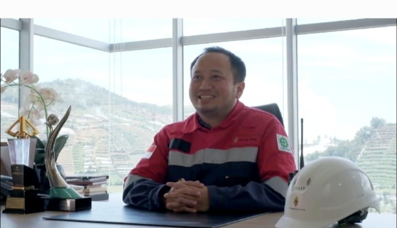
General Manager
PT Geo Dipa Energi Unit Dieng
Layanan Informasi Unit
(0286) 3326001
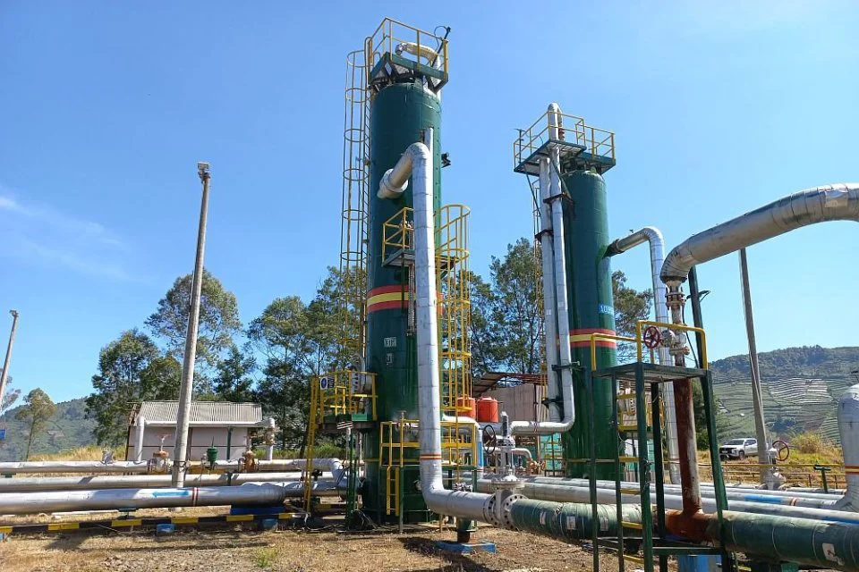
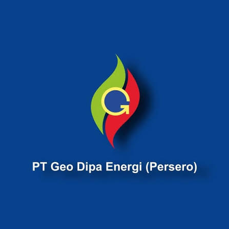
24+ Tahun
Mengabdi Menyediakan Energi Bersih Bagi Negeri
Kinerja Operasional & Dampak Positif Lingkungan
Data pencapaian kinerja produksi energi terbarukan, efisiensi konsumsi, serta komitmen pengelolaan lingkungan di wilayah kerja Dieng.
K
Reduksi CO2 (Ton/Tahun)
%
Keandalan Pembangkit
Operasional & Layanan Utama
Pilar utama kegiatan eksplorasi, eksploitasi, dan penyediaan listrik terbarukan di Unit Dieng
Pembangkitan Listrik
Mengubah uap panas bumi menjadi energi listrik bersih berskala besar untuk disalurkan ke sistem kelistrikan Jamali (Jawa-Madura-Bali).
Eksplorasi Geothermal
Studi geologi, geofisika, dan geokimia untuk memetakan potensi sumber daya panas bumi baru di wilayah kerja Dieng secara terukur.
Manajemen Lingkungan
Penjagaan kualitas udara, tanah, dan air sekitar lapangan geothermal melalui reinjeksi fluida dan monitoring keanekaragaman hayati.
Program TJSL / CSR
Program kemitraan dan bina lingkungan yang berfokus pada pendidikan, kesehatan, serta pemberdayaan ekonomi masyarakat Dieng.
Keselamatan K3LL
Penerapan Sistem Manajemen Keselamatan dan Kesehatan Kerja (SMK3) tingkat tinggi untuk perlindungan maksimal seluruh tenaga kerja.
Inovasi Teknologi
Digitalisasi pemantauan sumur dan otomasi sistem kontrol pembangkit guna meningkatkan efisiensi dan keamanan operasional.
Zero Harm & Safety First
Mengutamakan keandalan operasional dengan target kecelakaan kerja nihil di seluruh area PLTP Dieng.
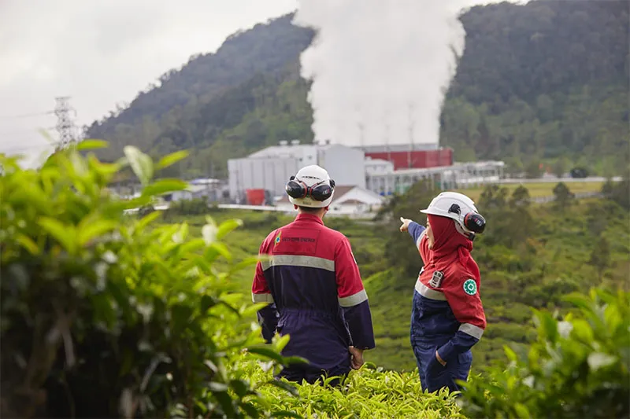
Konservasi Bio-Diversity
Menjaga kelestarian flora dan fauna endemik dataran tinggi Dieng secara berkelanjutan dan harmonis.
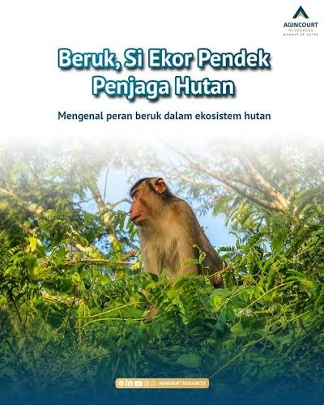
Pengembangan Unit 2
Proyek ekspansi PLTP Dieng Unit 2 untuk menambah pasokan listrik bersih nasional sebesar 55 MW.
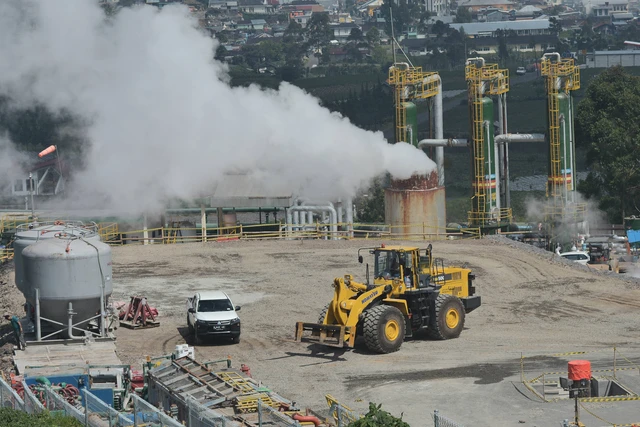
Pemberdayaan Masyarakat
Meningkatkan kesejahteraan warga sekitar melalui bantuan infrastruktur, UMKM lokal, dan agrowisata.
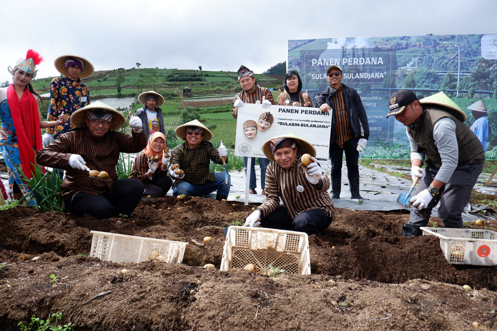
Keunggulan Pembangkit
Inovasi teknologi dan standar operasional berkelas dunia di PT Geo Dipa Energi Unit Dieng
Solusi Energi Bersih Terintegrasi
Pengelolaan potensi panas bumi di Dieng dilakukan dengan prinsip tata kelola perusahaan yang baik (GCG) dan pengawasan lingkungan komprehensif.
99%
Tingkat Keandalan (Capacity Factor)
24/7
Pengawasan Sumur & Pembangkit
290+
Tenaga Ahli Geothermal
BUMN Geothermal
Efisiensi Ekstraksi
Menggunakan sistem separator dan turbin canggih untuk memaksimalkan energi dari uap panas bumi.
Sistem Reinjeksi 100%
Seluruh air kondensat dikembalikan ke dalam perut bumi untuk menjaga kelestarian reservoir.
Pemantauan Terpadu
Monitoring reservoir secara real-time untuk memastikan keberlanjutan tekanan dan suhu sumur.
Mitigasi Dampak
Penerapan kontrol emisi gas dan pengelolaan kebisingan sesuai standar Baku Mutu Lingkungan.
Komitmen Masa Depan Geothermal Dieng
Discover powerful features designed to elevate your business operations to the next level of excellence.
01
Operasional
Sistem Manajemen Reservoir Terpadu
Mengoptimalkan tekanan uap dan pasokan air terinjeksi secara efisien guna menjaga stabilitas produksi pembangkit.
- Otomasi Sumur Injeksi
- Pengendalian Kerak & Korosi
02
Lingkungan
Sistem Pemantauan Emisi Online
Integrasi sensor lingkungan terkini untuk memastikan ambang batas kualitas udara dan air tetap aman bagi ekosistem Dieng.
- Deteksi Dini Gas NCG
- Laporan Lingkungan Berkala
03
K3LL / Safety
Sistem Manajemen Keselamatan Kerja
Penerapan budaya *Zero Harm* dengan perlindungan ketat dan prosedur darurat berlapis di area kerja risiko tinggi.
- Inspeksi Peralatan Rutin
- Pelatihan Keselamatan Berkala
04
Pengembangan
Ekspansi PLTP Dieng Unit 2
Proyek penambahan kapasitas listrik 55 MW untuk memenuhi kebutuhan pasokan energi hijau Jawa-Bali.
- Pengeboran Sumur Baru
- Peningkatan Kapasitas Listrik
Mengapa Geo Dipa Unit Dieng?
Komitmen kami dalam mengelola potensi energi panas bumi secara profesional, aman, dan berkesinambungan
01
Pengalaman Operasional Panjang
Telah berpengalaman puluhan tahun mengelola lapangan geothermal Dieng dengan keandalan pasokan listrik yang tinggi.
02
Teknologi Geothermal Modern
Menggunakan peralatan penyerapan uap dan ekstraksi energi terkini untuk efisiensi produksi yang optimal.
03
Komitmen Hijau & Sustainable
Menerapkan sistem *100% reinjection* demi menjaga daya dukung lingkungan dan kesinambungan reservoir bumi.
04
Pemberdayaan Masyarakat Lokal
Tumbuh bersama warga Dieng melalui berbagai program Tanggung Jawab Sosial dan Lingkungan (TJSL/CSR) yang berkelanjutan.
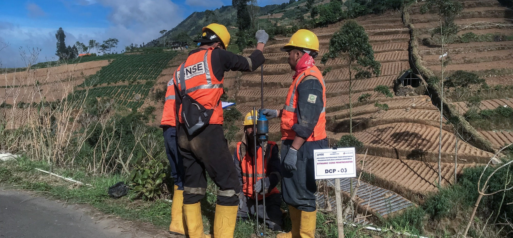
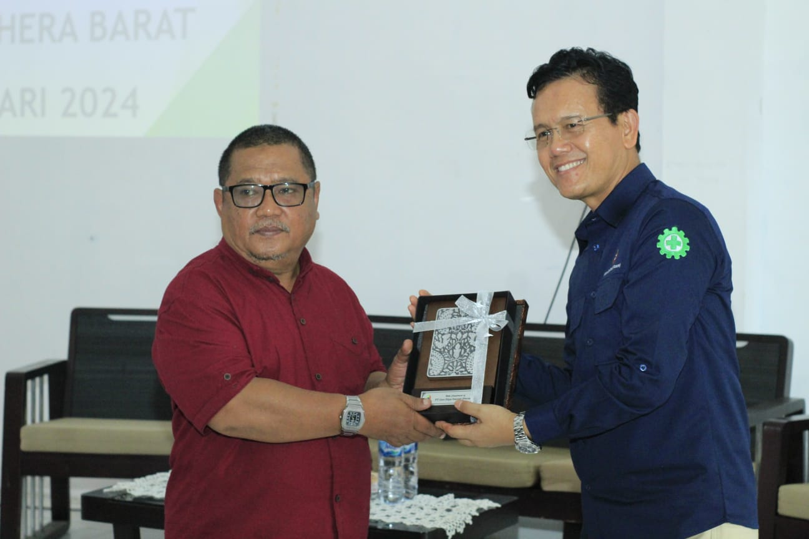
99%
Keandalan Pembangkit400+ GWh
Pasokan Energi/Tahun
Energi Hijau Nusantara
Mendukung Transisi Energi Bersih Indonesia
PT Geo Dipa Energi (Persero) Unit Dieng berdedikasi menjadi pilar utama penyedia energi ramah lingkungan menuju Indonesia Net Zero Emission.
Operasional 24 Jam Nonstop
Pengawasan Lingkungan Ketat
Standar K3 Berkelas Dunia
Sinergi Masyarakat & BUMN
Hubungi Kami
Putar Video Profil Unit
Video Operasional PLTP Dieng
Galeri & Dokumentasi Unit
Dokumentasi operasional, fasilitas PLTP, serta kegiatan sosial di lingkungan PT Geo Dipa Energi Unit Dieng
- Semua Foto
- Pembangkit & Sumur
- Fasilitas Teknis
- Kegiatan TJSL / CSR
- Lingkungan & Alam

PLTP Dieng Unit 1
Pembangkit Listrik Tenaga Panas Bumi eksisting kapasitas 60 MW

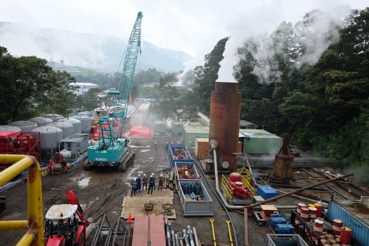
Area Sumur Produksi
Fasilitas kepala sumur uap panas bumi dan pipa penyalur

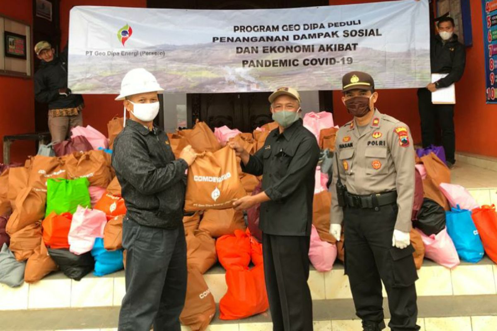
Program Bantuan UMKM
Kegiatan pemberdayaan ekonomi masyarakat sekitar Dieng

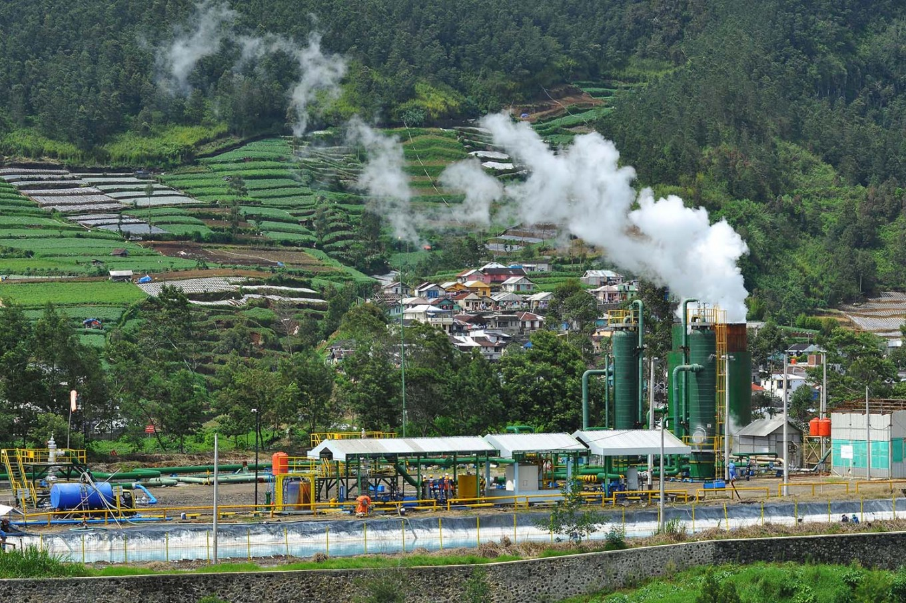
Kawasan Keanekaragaman Hayati
Area konservasi flora dan fauna di sekitar wilayah kerja

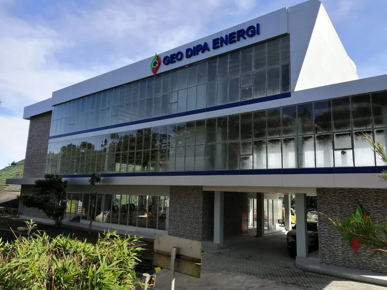
Gedung Ruang Kontrol
Pusat digitalisasi pemantauan sistem pembangkitan 24/7

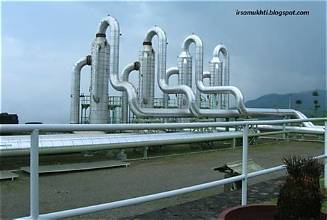
Fasilitas Separator Uap
Pemisah fase uap dan air panas bumi sebelum masuk turbin

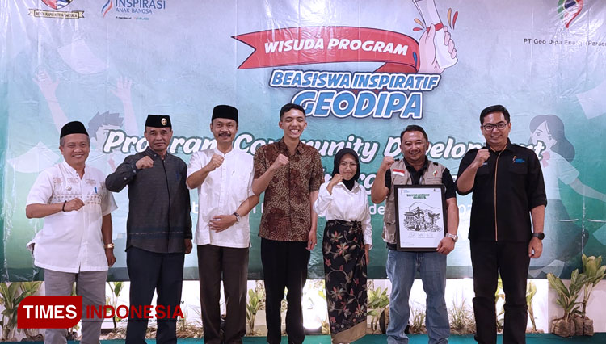
Beasiswa Pendidikan Dieng
Dukungan program TJSL untuk peningkatan kualitas pendidikan

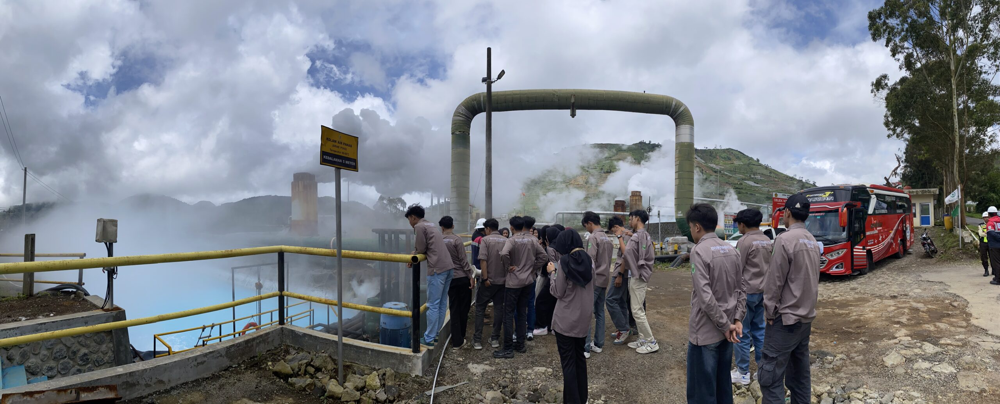
Stasiun Pemantauan Lingkungan
Alat ukur emisi dan kualitas udara lingkungan berkala

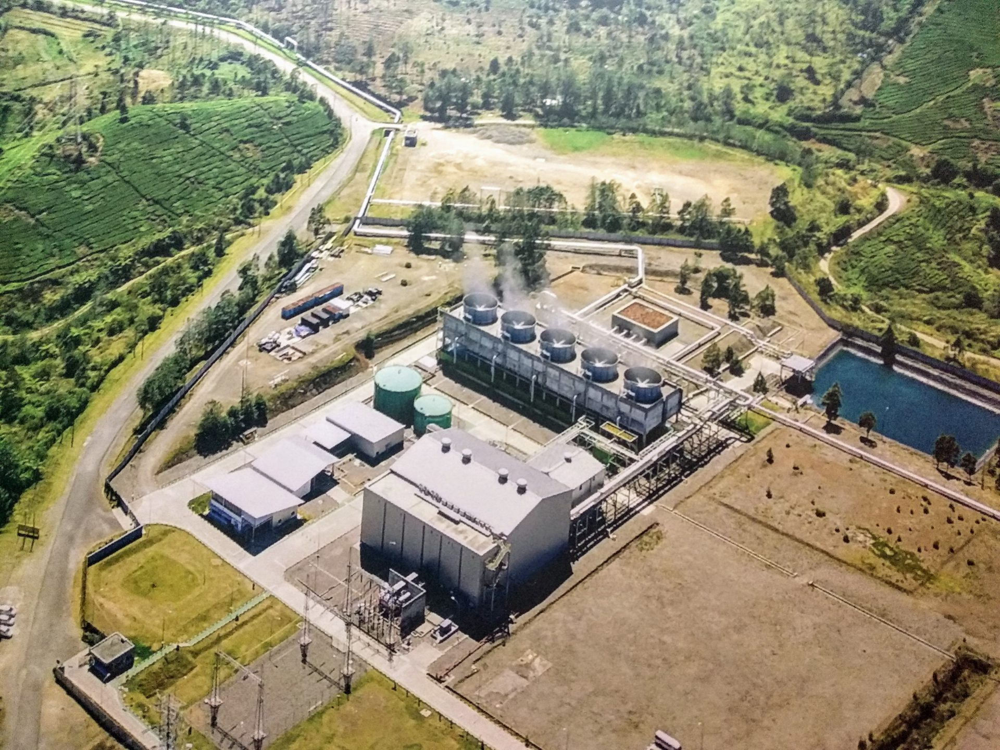
Lahan Proyek Unit 2
Persiapan area konstruksi ekspansi pembangkit baru 55 MW

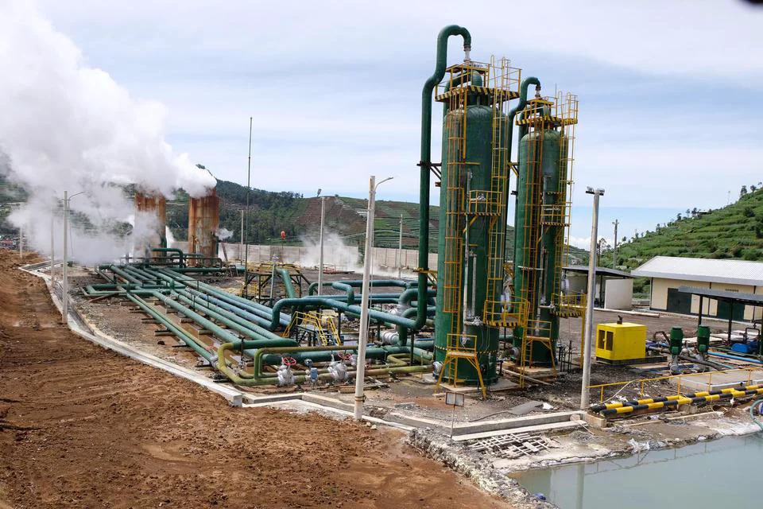
Sistem Pipa Reinjeksi
Jalur pengembalian air kondensat ke dalam reservoir bumi

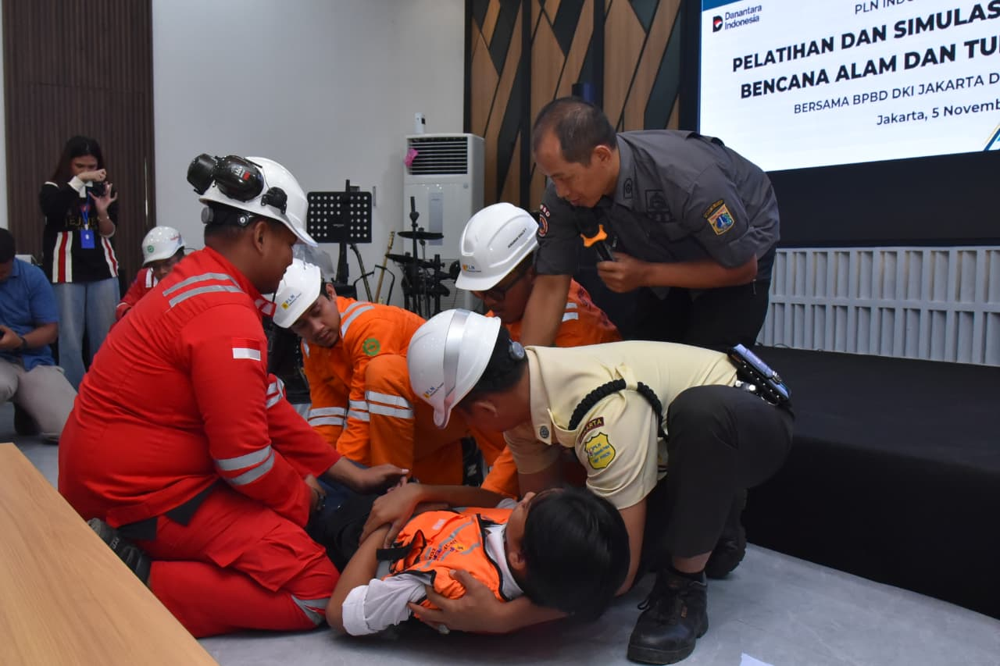
Pelatihan Tanggap Darurat
Simulasi dan pemeliharaan budaya K3 bagi seluruh pekerja

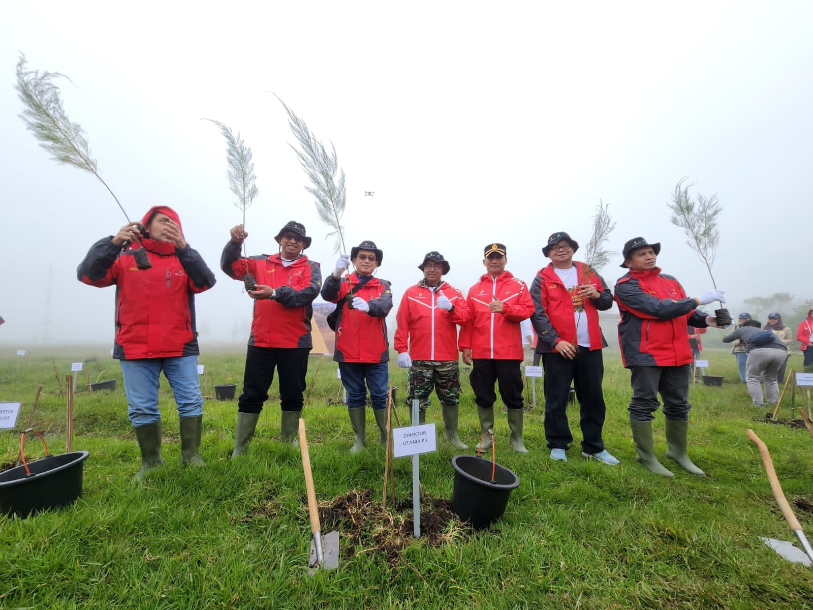
Penghijauan Dataran Tinggi
Aksi penanaman pohon bersama warga lokal Dieng
Laporan & Keterbukaan Informasi
Akses dokumen publik, laporan kinerja, dan komitmen keterbukaan informasi PT Geo Dipa Energi Unit Dieng
Laporan Tahunan & ESG
Publik
Dokumentasi transparansi kinerja keuangan, operasional, dan komitmen keberlanjutan lingkungan unit.
Dokumen Terintegrasi:
- Laporan Keberlanjutan (Sustainability Report)
- Laporan Kinerja Tahunan (Annual Report)
- Sertifikasi ISO & Proper Lingkungan
Prioritas Utamasi
Pengadaan / E-Procurement
Mitra Kerja
Sistem pengadaan barang dan jasa yang transparan, adil, dan berintegritas bagi calon mitra proyek.
Layanan Pengadaan:
- Pendaftaran Rekanan Terseleksi (DRT)
- Informasi Tender & Lelang Aktif
- Pedoman Tata Kelola Pengadaan Bersih
- Portal E-Procurement Resmi
Layanan Informasi Publik (PPID)
Masyarakat
Layanan keterbukaan informasi bagi akademisi, masyarakat, dan stakeholder yang membutuhkan data publik.
Layanan PPID:
- Permohonan Informasi Publik Resmi
- Prosedur Kunjungan Lapangan / Edukasi
- Akses Regulasi & Kebijakan Perusahaan
- Channel Pengaduan & Whistleblowing
- Layanan Stakeholder Relations
Pertanyaan Terkait
Informasi seputar operasional PLTP Dieng, keamanan lingkungan, dan pemanfaatan energi panas bumi.
1. Bagaimana cara kerja Pembangkit Listrik Tenaga Panas Bumi (PLTP) Dieng?
Uap panas bumi diambil dari dalam perut bumi melalui sumur produksi, dipisahkan dari fluida di separator, lalu menggerakkan turbin untuk menghasilkan listrik bersih sebelum kondensatnya direinjeksikan kembali.
2. Apakah operasional PLTP Dieng aman bagi lingkungan sekitar?
Sangat aman. PT Geo Dipa Energi menerapkan sistem 100% reinjection untuk menjaga kestabilan tanah dan reservoir, serta melakukan pemantauan emisi udara dan air secara berkala sesuai standar Kementerian LHK.
3. Apa manfaat PLTP Dieng bagi masyarakat lokal sekitar?
Melalui program TJSL/CSR, Geo Dipa berkontribusi aktif dalam pembangunan infrastruktur desa, bantuan pendidikan, peningkatan sarana kesehatan, dan pemberdayaan ekonomi UMKM lokal.
4. Bagaimana progres pengembangan PLTP Dieng Unit 2?
Proyek Dieng Unit 2 sedang berjalan untuk menambah kapasitas sebesar 55 MW demi memperkuat ketahanan energi hijau dan mendukung target Net Zero Emission Indonesia.
5. Bagaimana prosedur pengajuan kunjungan lapangan atau penelitian?
Instansi atau akademisi dapat mengajukan surat permohonan resmi yang ditujukan kepada Manajemen PT Geo Dipa Energi Unit Dieng melalui portal PPID atau email resmi perusahaan.
Struktur Organisasi
Bagan tata kelola dan hirarki kepemimpinan PT Geo Dipa Energi (Persero) Unit Dieng
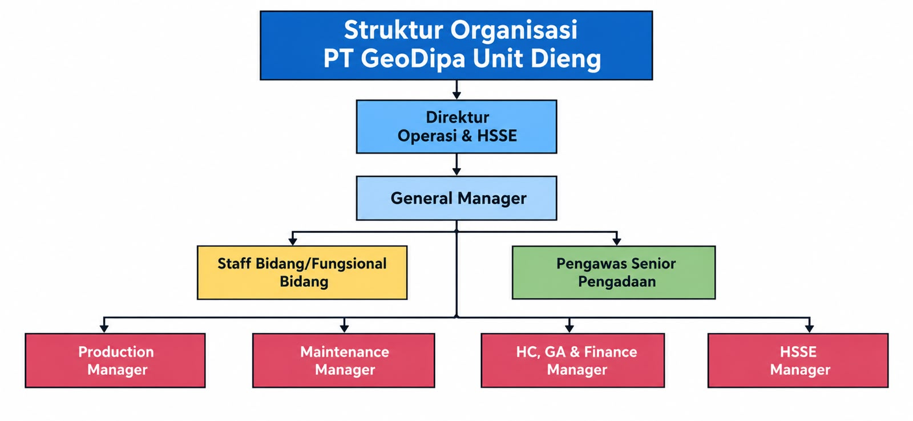
Tingkat Pusat / Korporat
Direktur Utama
Pemimpin tertinggi perseroan dalam menetapkan kebijakan strategis tata kelola bisnis geothermal nasional.
Tingkat Pusat / Korporat
Direktur Operasi & HSSE
Mengawasi keandalan operasional teknis pembangkitan dan kepatuhan standar keselamatan kerja seluruh unit.
Pimpinan Unit Dieng
General Manager Unit Dieng
Penanggung jawab utama operasional harian, manajemen aset, dan keberlanjutan energi di wilayah Dieng.
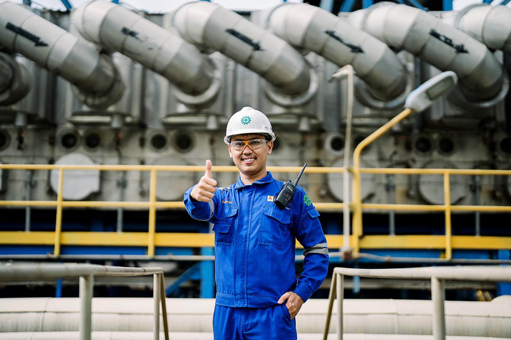
Divisi Operasional
Manager Produksi PLTP
Mengelola keandalan konversi energi, efisiensi pembangkitan listrik, dan suplai uap sumur produksi.
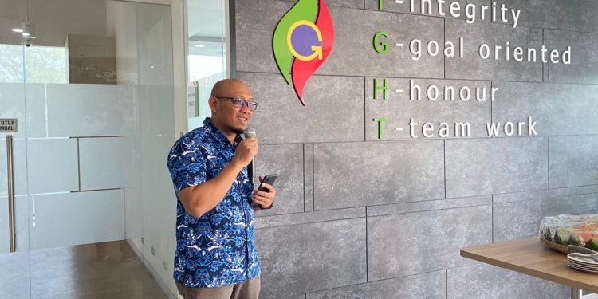
Divisi Teknik & Pemeliharaan
Manager Pemeliharaan
Mengkoordinasikan perawatan mekanikal, elektrikal, instrumen, dan fasilitas brine-steam di area lapangan.
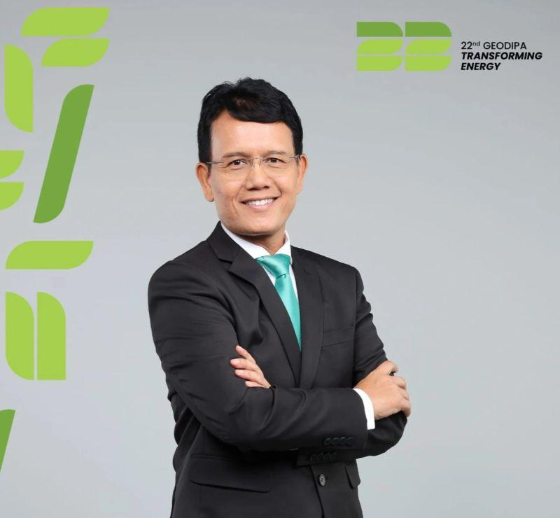
Divisi K3LL & Lingkungan
Manager HSSE & K3LL
Memastikan penerapan zero-accident, mitigasi bahaya H2S, dan pemantauan kelestarian lingkungan hidup.
Divisi Keuangan & SDM
Manager HC, GA & Finance
Mengelola perancangan anggaran unit, administrasi kantor, SDM, serta dukungan operasional umum.
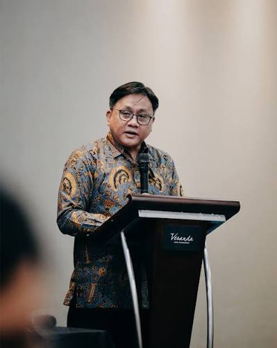
Tim Teknis Lapangan
Pengawas Senior Pengadaan
Pelaksana teknis lapangan mencakup steam field, power plant, perpipaan, pengadaan, dan Humas/TJSL.
Kontak & Lokasi
Hubungi PT Geo Dipa Energi (Persero) Unit Dieng untuk informasi operasional dan layanan publik